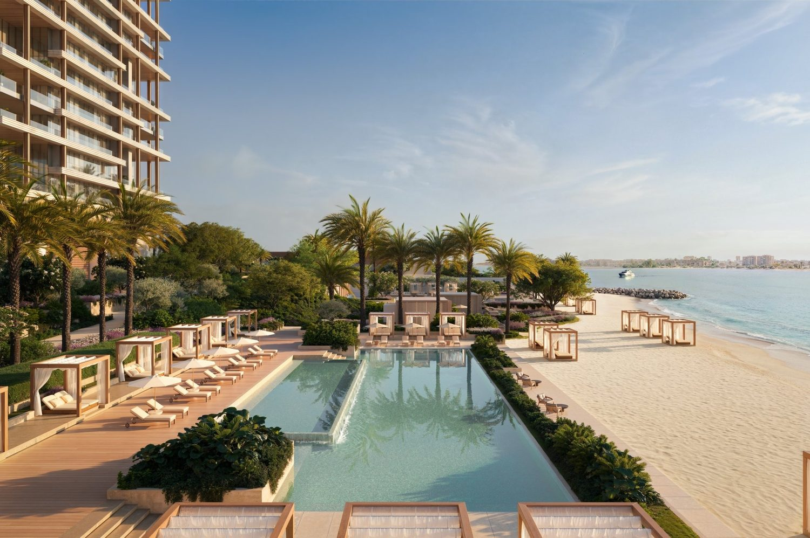
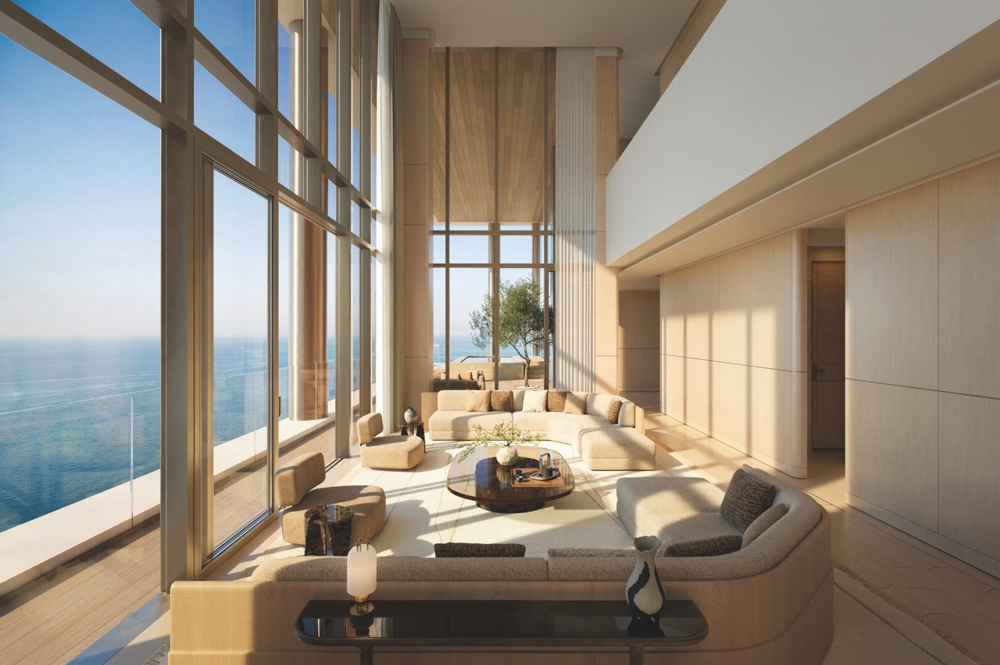
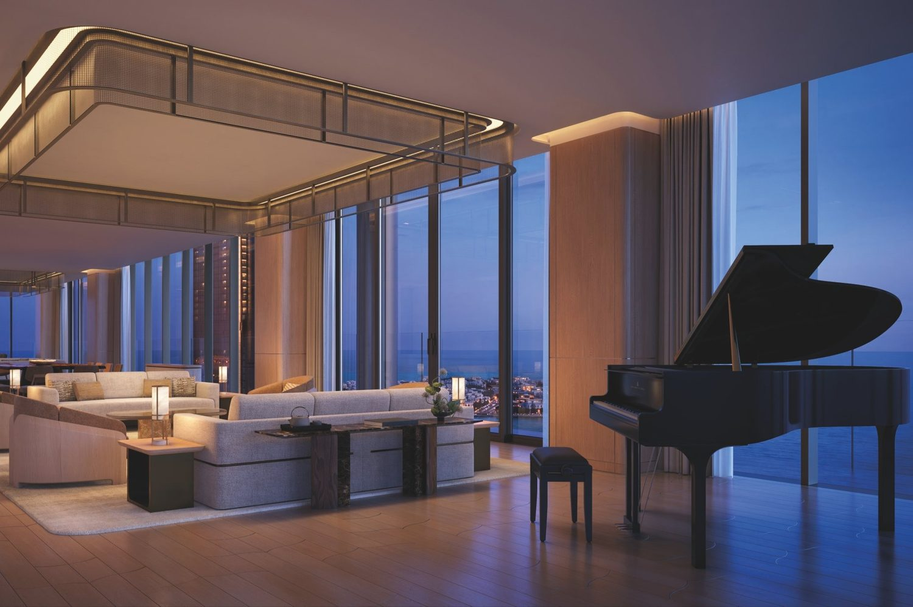
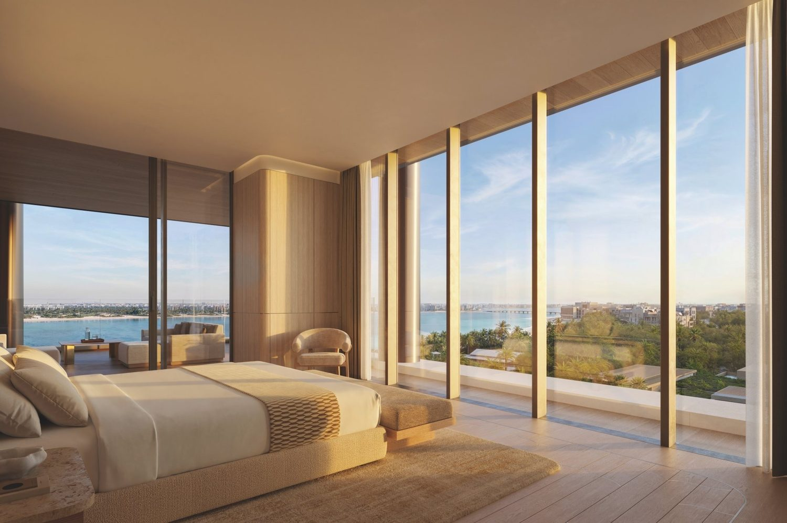

10 月 29 日，哈伊马角。安缦集团公布了 Janu 的第一个海滨项目：Al Marjan 岛上，132 间房、73 套住宅、五栋 Marina Villa，2028 年开业。
Janu 是安缦 2020 年推出的第二个品牌。两个名字都来自梵语，Aman 是“和平”，Janu 按品牌的说法是“灵魂”。一个让你安静下来，一个让你有点精神。
01｜先把位置说清楚
Al Marjan 是哈伊马角外海的一串人工岛。从迪拜机场开车 50 分钟，从哈伊马角机场 30 分钟。岛上眼下最受关注的项目不是酒店，是永利（Wynn Al Marjan Island），官方说法是“该地区第一个综合度假村”。Janu 的地块就在它旁边，265 米私属海滩，直接接上 Wynn Marina，岛上唯一的超级游艇码头，能停 85 米的船。
这个选址解释了很多事。哈伊马角过去是“路过”的酋长国，去迪拜的人不会为它多留一晚。永利带来航班、客流与话题，Janu 站在客流边上，用 132 间房接住另一部分人：不想住进几千间房的大度假村，又不想离热闹太远。

02｜安缦的反面
安缦的三十年做的是“减少”：房间少、招牌小、员工比客人多，最好你一整周都遇不到别的住客。
Janu 反过来做“增加”。餐饮、酒吧、共享客厅、健身房、社交活动，全都摆到明面上。2024 年 3 月，Janu Tokyo 在东京麻布台之丘开业，122 间房，室内由 Denniston 的 Jean-Michel Gathy 操刀，八个餐饮与社交场所。那就是这个品牌的样板：房间尺度不比安缦小，公共区域比安缦热闹得多。
一句话的区别：安缦让你不见人，Janu 让你见人。
03｜132 与 73
把数字并排放：132 间客房，73 套住宅，5 栋 Marina Villa。住宅面积从 197 到 1,096 平方米，顶层是一套 1,761 平方米的五卧复式，独占 29 层住宅塔的顶。
住宅有自己的入口、大堂与健身中心，同时可以用酒店的餐饮、社交与康养：2,496 平方米的康养空间、六个餐饮与娱乐场所、一间 Beach Club。建筑由新加坡的 SCDA Architects 负责，室内走的是浅木、米色石材与大面积落地窗，把海当作墙。

78 个可售单元，对应 132 间房。这个比例说明酒店在这块地上扮演什么角色：它是住宅的配套，也是住宅的样板间。买房子的人先住两晚酒店，再决定要不要签合同。

04｜2028，一张时间表
官方给出的开业时间是 2028 年。永利更早，媒体口径是 2027 年，官方尚未公布具体日期。顺序很重要：先有客流，再有酒店。
安缦集团的扩张也在同一张表上。Janu Dubai、Janu Turks & Caicos、Janu Montenegro 都在筹备，Janu 从东京的一间店，变成一个跨区域的品牌。这套打法和安缦不同：安缦挑目的地，Janu 挑城市与人流。

对旅行者的判断很简单：2028 年之前，这片海岸的看点是永利；2028 年之后，看 Janu 能不能把“社交”卖给来赌场的人。这两件事不冲突，甚至互为客源。
05｜现在能做什么
酒店没开，住宅在卖，询价走 residences@janu.com，价格未公布。如果打算 2028 年去，可以把它放进“迪拜加哈伊马角”的两地行程：DXB 落地，50 分钟车程，住三晚，一天在海上，一天进山，一天什么都不做。
- 公布：2026 年 10 月 29 日
- 开业：2028 年
- 位置：哈伊马角 Al Marjan 岛；DXB 50 分钟，RAK 机场 30 分钟
- 房量：132 间；住宅 73 套（197–1,096 平方米）+ 5 栋 Marina Villa
- 顶层：五卧复式，1,761 平方米
- 设计：SCDA Architects
- 配套：2,496 平方米康养、六个餐饮与娱乐场所、Beach Club、265 米私属海滩、Wynn Marina
- 住宅询价：residences@janu.com
如果安缦卖的是“看不见人”，你愿意为“看见对的人”付多少钱？
curiohood · Stay Curious
事实核对：项目于 2026 年 10 月 29 日公布，官方页面标注 2028 年开业；132 间客房、73 套一至五卧住宅（197–1,096 平方米）、一套 1,761 平方米五卧复式顶层、五栋 Marina Villa、29 层住宅塔、SCDA Architects 设计、2,496 平方米康养空间、六个餐饮与娱乐场所、Beach Club、265 米私属海滩、Wynn Marina 可停 85 米游艇、距 DXB 50 分钟与 RAK 机场 30 分钟，均据 Janu 官网项目页与住宅页（2026 年 11 月 3 日读取）；“该地区第一个综合度假村”为 Janu 官方对永利的表述，永利开业时间媒体口径为 2027 年，官方未公布具体日期；Janu 品牌 2020 年发布、Janu Tokyo 2024 年 3 月开业与 122 间房、Denniston 与 Jean-Michel Gathy 设计，据品牌资料与当时报道；Aman 与 Janu 的梵语释义为品牌公开说法。配图来自 Janu 官方项目页（Aman Group 版权）。住宅价格未公布。